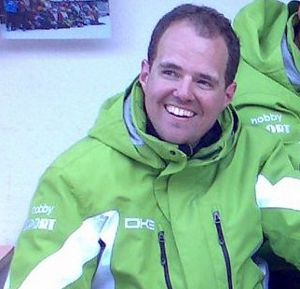
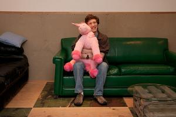
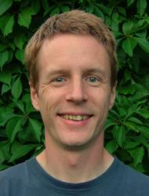

The PyPy Team (from 2008)
Armin Rigo¶
Armin Rigo is a former researcher at the Heinrich-Heine Universitat Düsseldorf (Germany). He studied Mathematics at the University of Lausanne (Switzerland), obtained his Ph.D. in Logic and Set Theory at the Free University of Brussels (Belgium) in 2002, and worked at the University of Southampton (UK) until 2005. He is the author of Psyco, the first just-in-time compiler for Python. He is one of the founders and lead developers of the PyPy project which began in 2003. He has taken part in all areas, from the Python language definition to the RPython translation framework, including the garbage collector and the tracing just-in-time compiler.
Maciej Fijałkowski¶
Maciej is a freelancer working mostly on PyPy for the past several years. He's a core developer since 2006, working on all kinds of parts in the entire codebase including JIT, GC and assembler backends. Maciej has been going to many conferences, advertising PyPy to a broader audience for the past several years, including a keynote at Pycon 2010. He's also the main maintainer of jitviewer, a tool for analyzing performance of your python programs under PyPy.
Carl Friedrich Bolz¶
Carl Friedrich is a core developer since 2005, currently doing his PhD at the Heinrich-Heine Universität Düsseldorf (Germany). He has worked on most aspects of PyPy, from the core interpreter to the GC to the JIT. He has published several papers about the inner workings of PyPy, presenting them at various scientific conferences. Carl Friedrich is also interested in other dynamic language implementation and was the original author of the Prolog implementation.
Carl Friedrich likes science fiction novels and sometimes plays the bassoon.
Antonio Cuni¶
Antonio Cuni loves skiing, mountains and programming languages. He studied
Computer Science at the University of Genova (Italy), and then at the same
university he obtained his Ph.D. in Computer Science in 2010, with a
dissertation about the PyPy CLI JIT backend. He has been a core PyPy
developer since 2006, working in various areas including the "object oriented
backends" for the CLI and JVM, the RPython translation framework, the Python
interpreter and the JIT compiler generator. Apart from PyPy, he is the author of
other popular tools such as pdb++.
Benjamin Peterson¶
Both a PyPy and CPython core developer, Benjamin knows way too much about the nooks and cranies of the Python language. He is driven by a fascination with interpreters and compilers of all shapes and sizes. Around the PyPy project, he tries to be generally useful and has taken on major projects including rewriting PyPy's Python compiler and porting PyPy to Python 2.7.
Alex Gaynor¶
Alex is software engineer living in Washington, DC. He's been a PyPy developer since 2010, and has worked on many parts of the codebase, including the JIT compiler's optimizers, the RPython translation toolchain, and the Python interpreter. In addition to his work on PyPy, Alex is also the creator of Topaz, a Ruby VM built on RPython and a core developer of Django (a Python web framework) and CPython, as well as a retired member of the board of directors of the Python Software Foundation.
Håkan Ardö¶
Håkan Ardö received his master of science degree in electrical engineering from Lund University in 2002. He specialized in VLSI-design and Image Processing. He worked as a software engineer at Axis Communications 2002-2003 before doing his PhD at the Centre for Mathematical Sciences of Lund University 2003-2009 in the Mathematical Imaging Group. His thesis work consisted of designing image processing algorithms for traffic surveillance, aiming for a system that automatically measures the safety of an intersection or road segment. He is currently working part-time as a postdoc at the Centre for Mathematical Sciences of Lund University continuing this work and part-time as CTO with a spinoff company Cognimatics. His contributions to PyPy started 2010 and consists of the array module as well as work on the JIT compiler's trace optimizers.
Holger Krekel¶
Holger Krekel is a founder of the PyPy project and has participated in PyPy core development for several years as well as maintained much of its infrastructure. He also is the author of the popular py.test and tox testing tools as well as execnet, a library for easily deploying different interacting Python interpreters side by side. He helped manage multiple PyPy funding contracts through his company merlinux and was a PyPy representative within the Software Freedom Conservancy (SFC). He holds a summa cum laude degree in computer science with a thesis about artificial intelligence applied to the game of Go. As of 2011 he is on another sabbatical-ish leave, caring for his newborn son, travelling and pondering what comes next. Other than that he continues to care for testing and some PyPy co-ordination bits behind the scene.
Samuele Pedroni¶
Samuele Pedroni got involved with PyPy almost at its inception in the spring of 2003. One of the design contributors to PyPy, his help has ranged from infrastructure and processes, through building out RPython... optimizing the Python interpreter, to compressing resume data in the last incarnation of the JIT compiler. Tempted away into the application side of the software equation, these days he contributes some words and wisdom to PyPy's paper writing.
Many more people¶
PyPy is and has always been an effort of many volunteers. Consult the LICENSE file for details.